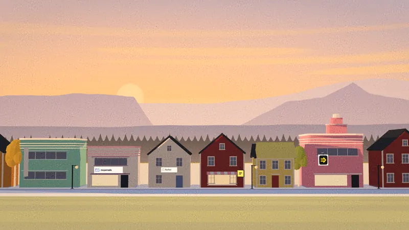

The main street
Every sign on the street is a product.
Each one keeps its own hours. All of them are open while you read this.
A light is on somewhere on the street.

I build software that pays for itself.
Apps, SaaS and infrastructure for AI agents. On Google Play since 2016.
The main street
Each one keeps its own hours. All of them are open while you read this.
A light is on somewhere on the street.
